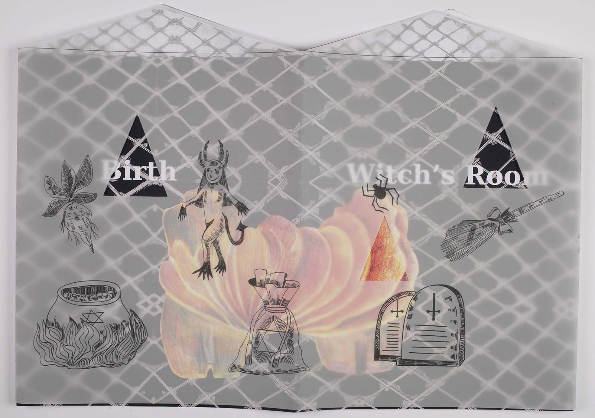
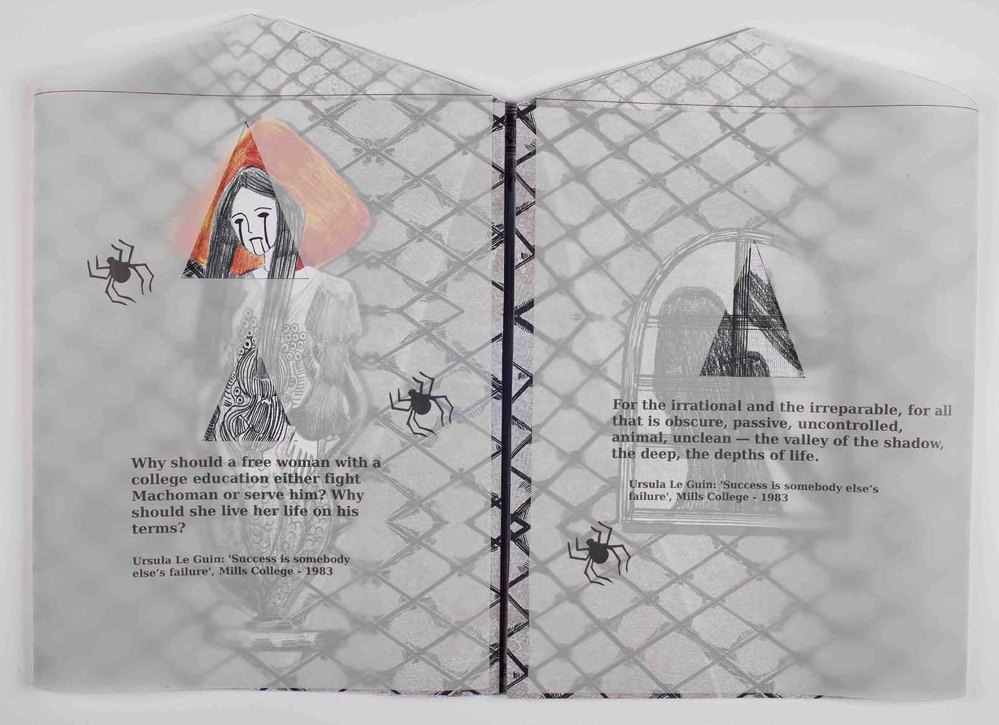
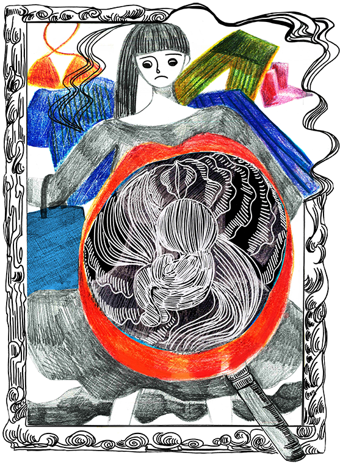
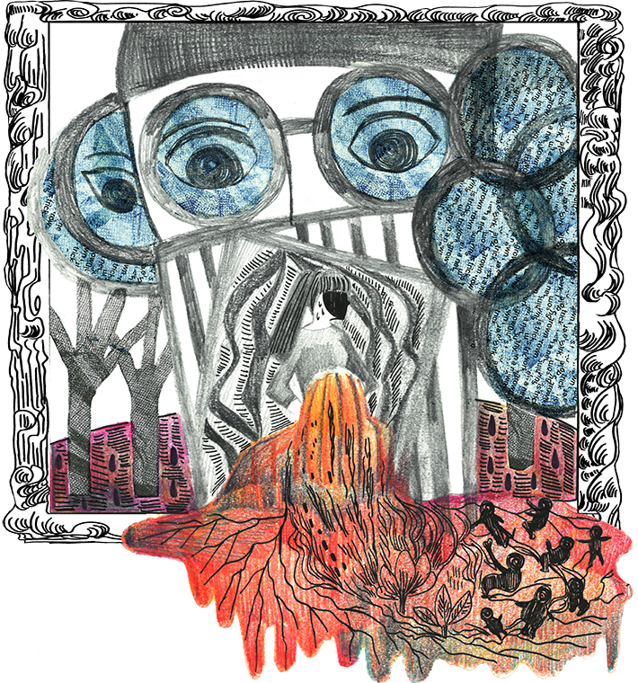
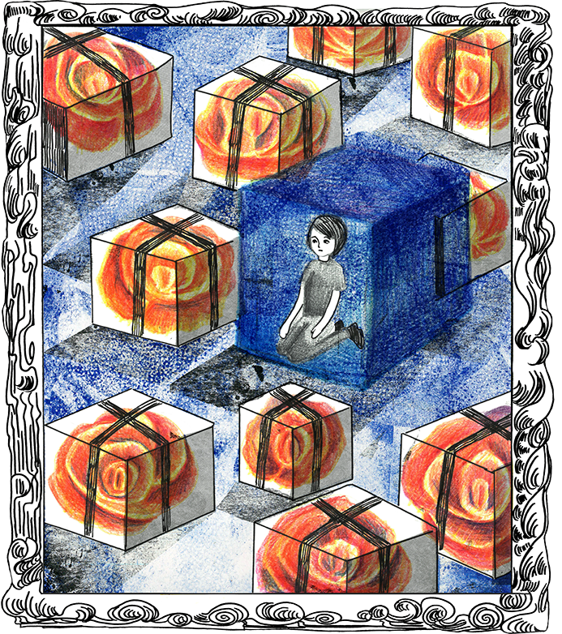

Witch's Room女巫的房間
This project explores the relationship between misogyny and women’s literature.
From this starting point I created visual responses that speak to five major areas: Career, Birth, Sex, Body Control and Hate Speech.
My work incorporates a layered approach through the use of transparent paper to metaphorically represent the barriers faced by women in our society.
畢製主題以歷史上的女巫與現代厭女症為連繫，
共分五個面相: 職場，生育，性自主，身體掌控，
仇恨言論，來討論現代女性面對的厭女症狀。





第三個網頁：回到 首頁